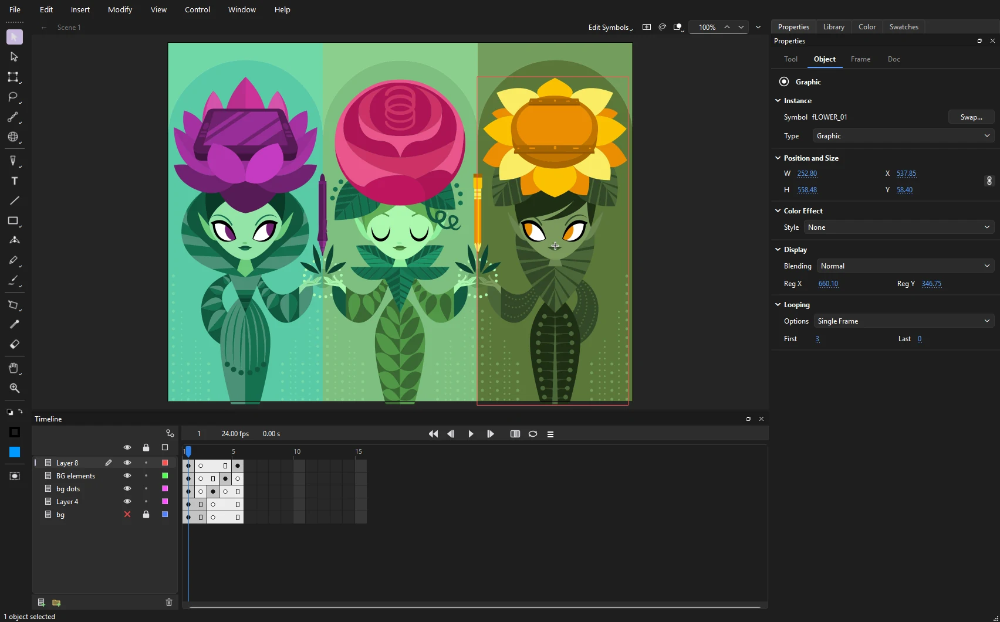

Phoenix Animation
Next generation of vector animation.
Phoenix is a vector animation software for Windows, macOS, and Linux. Artists get expressive brushes and a timeline that feels familiar from the first frame. Production teams get FLA files that open and save back intact, a fast native format, and rendering you can script, so Phoenix fits into the pipeline you already run.

What you can do with Phoenix
Draw the way you draw
Brushes that answer to pressure and tilt, textured and bitmap brushes, a pencil that cleans your lines, and a pen for exact curves.
Symbols, instances, libraries
Turn artwork into symbols, edit them in place, and keep a library that grows with the show. Add filters, blends and color effects to any instance.
Bring it to life
Frame by frame or tweened: classic, shape and motion tweens, custom eases, onion skinning, masks, bones and lip sync.
Create motion graphics
Behaviors that wiggle, orbit, follow and spray particles; animated letters, strokes that draw on, adjustment effects, motion blur, track mattes and fill-in templates for titles and lower thirds.
Open the files you already have
FLA files old and new, and XFL folders, open as they are and save back to FLA with nothing dropped, so years of work come with you.
Deliver in any format
MP4 and ProRes, GIF, PNG and SVG sequences, compositing passes, sprite sheets, SWF and WAV. Render one shot, queue a batch, or script it from the command line.
Rig and stage big shots
Pegs, deformers, master controllers and function curves for rigs; an X-sheet and a multiplane camera for staging.
Built for production
Start from the animatic, break it into shots, share linked assets across them, collect review notes, and keep every file in version control.
About Phoenix
Phoenix and AI. Phoenix is made for artists, and it respects that many of them do not want their art used to train AI, or AI used to make their art. No AI is built into Phoenix: it has no AI model, calls no AI service, makes no images with AI, and never sends your artwork anywhere to train one. An AI assistant can help with technical work, such as tidying layers or finding what is wrong with a file, only if you run one yourself and allow it to connect. Your artwork and AI says what an assistant sees and how to keep your work out of its maker's training.
Phoenix is under active development, and new tools and panels arrive often. Sections marked Planned describe work that is on the way but not in the current release.